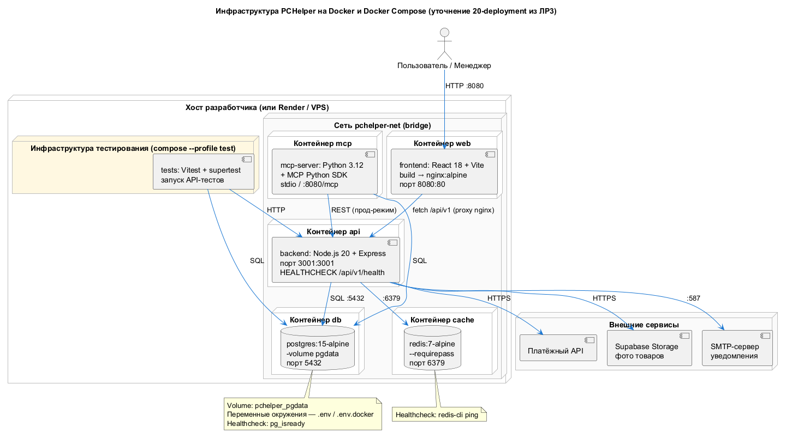
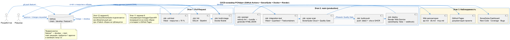
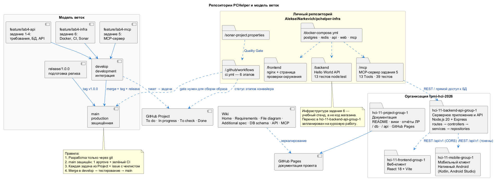

Структура репозиториев и модель веток
Файл: diagrams/plantuml/12-repo-branches.puml
Репозитории
Фактически создан один репозиторий — инфраструктурный стенд задания 6:
| Репозиторий | Назначение | Состояние |
|---|---|---|
AlekseiNarkevich/pchelper-infra | Документация лабораторной работы, вики, GitHub Pages, Docker-окружение, CI/CD, SonarQube, развёртывание | рабочий: конвейер зелёный, сервис доступен на pchelper-infra.onrender.com |
Задание 6, пункт 2 требует разнести проект по репозиториям бекенда, веб- и мобильной версии. Целевая структура курсовой работы — четыре репозитория в организации fpmi-hci-2026: документация, серверное приложение и API, веб-клиент и мобильный клиент. На момент сдачи лабораторной работы они не созданы, поэтому в отчёте ссылки на них не приводятся — вместо них показано то, что действительно сделано.
Репозиторий, в котором выполняется задание 6. Конвейер CI/CD, проверка качества кода и развёртывание выполняются в отдельном личном репозитории AlekseiNarkevich/pchelper-infra. Это сознательное решение: инфраструктура задания 6 — учебный стенд, который поднимается одной командой docker compose up -d --build, и выносить его в отдельный репозиторий преждевременно, пока нечего переносить. Структура:
pchelper-infra/
├── .github/workflows/ci.yml # конвейер из шести этапов
├── docker-compose.yml # postgres, redis, api, web, mcp
├── backend/ # Hello World API + 13 тестов
├── frontend/ # nginx + страница проверки окружения
├── mcp/ # MCP-сервер задания 5
├── sonar-project.properties # конфигурация SonarQube
└── README.mdКогда стенд будет перенесён в код магазина (курсовая работа), конвейер переедёт в репозиторий серверного приложения.
Модель веток
Согласованная командой модель, одинаковая для всех репозиториев. Фактически в pchelper-infra сейчас создана только ветка main; остальные ветки появятся вместе с первыми задачами из GitHub Project:
| Ветка | Назначение |
|---|---|
main | Продакшн. Защищена: требуется approve и зелёный статус CI |
develop | Интеграция, сюда сливаются feature-ветки |
feature/<задача> | Одна задача из GitHub Project |
release/<версия> | Подготовка релиза из develop |
hotfix/<проблема> | Срочное исправление из main |
Соглашение о ветках
| Ветка | Назначение | Правило |
|---|---|---|
main | Продакшн | Защищена правилом Protect main: обязателен pull request (0 approvals — на этапе лабораторной работу ведёт один человек), зелёный статус CI, squash-слияние, запрет force push и удаления ветки. Только коммиты, прошедшие тесты, SonarQube Quality Gate и попавшие в собранный образ |
develop | Интеграция | Все feature-ветки сливаются сюда. Здесь же прогоняется полный CI |
feature/<задача> | Одна задача из Project | Ветка создаётся под один issue. Коммиты вида feat(api): добавлен POST /cart/merge (#42) |
release/<версия> | Подготовка релиза | Создаётся из develop, в неё переносятся только исправления |
hotfix/<проблема> | Срочное исправление | Из main, сливается и в main, и в develop |
Обязательные правила, согласованные командой:
- Разработка ведётся только через систему контроля версий — правки
в main напрямую запрещены, ветка защищена настройками GitHub.
- Каждая задача из GitHub Project = отдельный issue с чеклистом
критериев приёмки.
- Pull Request обязателен; в шаблоне PR — чек-лист ревью
(.github/PULL_REQUEST_TEMPLATE.md).
- Merge в
mainтолько при зелёных проверках: тесты, Quality Gate,
успешная сборка образа.
- Сообщения коммитов — на английском в формате Conventional Commits.
Как настраивается (пошагово):
- *Settings → Rulesets → **New ruleset* → в выпадающем списке Branch**.
- Ruleset Name:
Protect main. - Enforcement status:
Active(неDisabledи неEvaluate). - Rules → Target branches → Include: добавить
refs/heads/main. - Включить правила:
- Require a pull request before merging — Required approvals:
1
(см. примечание ниже);
- Do not allow bypassing the above settings — чтобы правило
нельзя было обойти кнопкой Admin;
- Block force pushes — запрет
git push --force; - Restrict deletions — запрет удаления ветки;
- Require linear history — запрет merge-коммитов.
- Require status checks to pass before merging — включить
после первого прогона workflow: GitHub показывает в списке только те проверки, которые уже отработали хотя бы раз. Добавить: lint, unit-and-integration, openapi-spec, sonar-quality-gate, build-and-push.
Docker-инфраструктура
Файл: diagrams/plantuml/10-docker-infrastructure.puml
Это уточнение диаграммы развёртывания из лабораторной работы 3 (20-deployment.puml): в ней появились контейнеры, порты, healthcheck, тома и профиль тестового окружения.
Состав окружения
| Контейнер | Образ | Порт | Healthcheck | Volume |
|---|---|---|---|---|
pchelper-web | сборка React → nginx:1.27-alpine | 8080:80 | wget http://127.0.0.1/ | — |
pchelper-api | node:20-alpine, многостадийная сборка | 3001:3001 | wget …/api/v1/health | — |
pchelper-mcp | python:3.12-slim (профиль mcp) | 8081:8080 | HTTP-проверка /mcp | mcpdata |
pchelper-postgres | postgres:15-alpine | 5432:5432 | pg_isready | pgdata |
pchelper-redis | redis:7-alpine | 6379:6379 | redis-cli ping | redisdata |
pchelper-tests | backend target dev (профиль test) | — | — | — |
Решения по контейнеризации
| Решение | Обоснование |
|---|---|
Многостадийная сборка backend (deps → dev → prod) | В production-образ не попадают dev-зависимости и исходники тестов; целевой слой deps кэшируется между сборками |
| Запуск от непривилегированного пользователя | В prod-стадии создаётся пользователь pchelper, USER pchelper — минимизация поверхности атаки |
tini как entrypoint | Корректная обработка SIGTERM от Docker Compose: контейнер успевает завершить запросы |
| Healthcheck в каждом образе | depends_on: condition: service_healthy — API стартует только после готовности БД и кэша |
Схема БД в /docker-entrypoint-initdb.d | Скрипты из db/ применяются автоматически при первом запуске postgres |
Профили test и mcp | Обычный запуск поднимает только 5 контейнеров; тесты и MCP — по требованию |
Переменные окружения в .env | Секреты не попадают в образ и в репозиторий; .env в .gitignore |
nginx с SPA-fallback и проксированием /api | Фронтенд работает на относительном URL /api/v1 в любом окружении — не нужно пересобирать при смене адреса API |
Dockerfile (backend, сокращённо)
# ---------- Этап 1: только production-зависимости ----------
# Вынесено в отдельный слой, чтобы Docker кэшировал npm ci
# и не переустанавливал пакеты при каждом изменении исходников
FROM node:20-alpine AS deps
WORKDIR /app
COPY package*.json ./
RUN npm ci --omit=dev
# ---------- Этап 2: итоговый образ ----------
FROM node:20-alpine AS prod
WORKDIR /app
# Режим работы и порт, который слушает приложение
ENV NODE_ENV=production PORT=3001
# tini — минимальный init-процесс: корректно обрабатывает SIGTERM
# от Docker Compose, поэтому контейнер успевает завершить запросы
RUN apk add --no-cache tini
# Забираем node_modules из слоя deps (dev-зависимости туда не попали)
COPY --from=deps /app/node_modules ./node_modules
COPY package*.json ./
COPY server.js ./
COPY src ./src
COPY openapi.yaml ./openapi.yaml
# Создаём непривилегированного пользователя и передаём ему владение файлами:
# процесс внутри контейнера не должен работать от root
RUN addgroup -S pchelper && adduser -S pchelper -G pchelper \
&& chown -R pchelper:pchelper /app
USER pchelper
# Порт, который приложение слушает ВНУТРИ контейнера
EXPOSE 3001
# Проверка живости: каждые 30 секунд опрашиваем /health.
# Пока healthcheck не пройден, docker-compose не считает сервис готовым
# и не запускает зависящие от него контейнеры.
HEALTHCHECK --interval=30s --timeout=3s --start-period=10s --retries=3 \
CMD wget -qO- http://127.0.0.1:3001/api/v1/health || exit 1
# tini обязателен первой в ENTRYPOINT, чтобы SIGTERM дошёл до node
ENTRYPOINT ["/sbin/tini", "--"]
CMD ["node", "server.js"]Оба файла приведены выше в виде листингов — они и есть доказательство. Отдельные скриншоты не нужны.
Запуск окружения и фактический результат
# 1. Копируем шаблон переменных окружения и при необходимости правим значения
cd infra
cp .env.example .env
# 2. Поднимаем окружение: сборка образов + запуск контейнеров
docker compose up -d --build
# 3. Смотрим состояние контейнеров
docker compose psФактический вывод docker compose ps:
NAME IMAGE SERVICE STATUS PORTS
pchelper-api pchelper/api:1.0.0 api Up 22 seconds (healthy) 0.0.0.0:3001->3001/tcp
pchelper-postgres postgres:15-alpine postgres Up 32 seconds (healthy) 0.0.0.0:5432->5432/tcp
pchelper-redis redis:7-alpine redis Up 32 seconds (healthy) 0.0.0.0:6379->6379/tcp
pchelper-web pchelper/web:1.0.0 web Up 16 seconds (healthy) 0.0.0.0:8080->80/tcpВсе четыре контейнера в статусе healthy. Это результат работы healthcheck'ов: pg_isready для БД, redis-cli ping для кэша и HTTP-запрос к /api/v1/health для backend.
Остановка и удаление:
docker compose down # остановить контейнеры, тома останутся
docker compose down -v # остановить и удалить тома с даннымиАвтоматические тесты в CI
Требование задания 6, пункт 6: «Добавить автоматические тесты, чтобы сервер CI перед сборкой выполнял тесты и формировал сборку только после их прохождения».
| Группа | Что проверяет | Файл |
|---|---|---|
| Юнит-тесты API | /health, /hello, /hello/db, 403 без роли, 200 с ролью, 404 в JSON-формате | infra/backend/tests/health.test.js — 8 тестов |
| Smoke-тесты в контейнере | Те же маршруты, но через сеть Docker Compose и реальный контейнер | infra/backend/tests/smoke.test.js — 5 тестов |
| MCP | 39 юнит-тестов доменной логики | mcp/tests/test_services.py |
| Итого | 52 автоматических теста |
Тесты используют встроенный раннер node:test и глобальный fetch, поэтому образ с тестами не требует vitest и supertest и собирается быстро.
Фактические результаты прогонов:
$ cd infra/backend && npm test
# tests 8
# pass 8
# fail 0
$ docker compose --profile test run --rm tests
# tests 5
# pass 5
# fail 0
$ cd ЛР4/mcp && pytest -q
39 passed in 2.12sМеханизм блокировки сборки в .github/workflows/ci.yml:
# build-and-push объявлен через needs: [ test, sonar ].
# Пока хотя бы один из этих этапов не завершился успешно,
# сборка образа НЕ начинается — и образ не попадает в реестр.
build-and-push:
needs: [ test, sonar ]
… # тело job: сборка и push в GHCRПокрытие кода считается инструментом c8 (npm run test:coverage) в формате LCOV, выгружается артефактом coverage и передаётся в SonarQube через sonar.javascript.lcov.reportPaths, поэтому снижение покрытия видно в отчёте о качестве. Фактическое покрытие backend — 95,47 % инструкций, 100 % функций. Сам каталог coverage/ исключён из репозитория через .gitignore.
CI/CD-конвейер
Файл: diagrams/plantuml/11-cicd-pipeline.puml
Этапы конвейера
pull request → develop
├─ 0. lint ESLint + Prettier --check
├─ 1. test unit-тесты + покрытие c8 (lcov.info)
└─ 2. openapi redocly lint → bundle → генерация Swagger
push → main
├─ 3. sonar SonarQube Quality Gate (wait=true, таймаут 300 с)
├─ 4. build-and-push сборка и публикация образов в GHCR (:latest и :sha)
└─ 5. deploy вебхук RenderЗависимости между этапами (объявлены через needs):
| Этап | Зависит от | Условие запуска |
|---|---|---|
lint | — | всегда |
test | lint | всегда |
openapi | lint | всегда, идёт параллельно с тестами |
sonar | test, lint | только при пуше в main |
build-and-push | test, sonar | test — успех и sonar — успех или пропущен |
deploy | build-and-push | только при пуше в main |
Таким образом, образ публикуется только после зелёных тестов и зелёного Quality Gate. Если SonarQube провалился — публикации не будет: условие требует именно needs.sonar.result == 'success'.
Секреты, необходимые для конвейера
Settings → Secrets and variables → Actions → New repository secret
| Секрет | Где получить | Что делает без него |
|---|---|---|
SONAR_TOKEN | Личный кабинет SonarCloud: My Account → Security → Generate Token | Этап 3 завершается ошибкой с инструкцией — Quality Gate не выполняется, образы не собираются |
RENDER_DEPLOY_HOOK | Панель Render: веб-сервис → Settings → Deploy Hook | Этап 5 выводит предупреждение и завершается успешно |
GITHUB_TOKEN | выдаётся автоматически | Публикация образов в GHCR |
# Правильно: проверка секрета внутри шага
- name: Проверить наличие токена SonarQube
id: token
env:
TOKEN: ${{ secrets.SONAR_TOKEN }} # secrets разрешён в env
run: |
if [ -z "$TOKEN" ]; then
echo "::error::Секрет SONAR_TOKEN не создан"
exit 1
fi
# Неправильно: secrets в условии задания -> файл не разбирается
sonar:
if: github.ref == 'refs/heads/main' && secrets.SONAR_TOKEN != ''Эта ошибка была обнаружена на практике: первый вариант конвейера с таким условием падал за 0 секунд и не создавал ни одного этапа.
Генерация Swagger на этапе сборки (пункт 11)
# Задание GitHub Actions, генерирующее спецификацию Swagger.
# Выполняется параллельно с тестами: документация не должна ждать
# успешного Quality Gate, но обязана проверяться линтером.
openapi:
name: Генерация Swagger
steps:
# Устанавливаем линтер спецификаций OpenAPI
- run: npm install --global @redocly/cli
# Шаг 1. Проверка: синтаксис, ссылки $ref, соответствие примеров схемам
- run: redocly lint api/openapi.yaml
# Шаг 2. Сборка всех $ref в один самодостаточный файл
- run: redocly bundle api/openapi.yaml --output api/dist/openapi.bundled.yaml
# Шаг 3. Статическая HTML-документация (Redoc)
- run: npx @redocly/cli build-docs api/dist/openapi.bundled.yaml --output api/dist/index.html
# Шаг 4. Выгрузка результата артефактом — к нему обращаются
# при публикации документации проекта
- uses: actions/upload-artifact@v4
with:
name: swagger-docs
path: api/dist/Артефакт swagger-docs содержит статическую страницу документации, собранную из того же openapi.yaml, — спецификация API всегда соответствует коду.
Проверка качества кода SonarQube
Требование задания 6, пункт 12.
Локальная версия
# Поднимаем локальный SonarQube Community Edition в одноразовом контейнере.
# Флаги:
# --rm -it контейнер удаляется после остановки, интерактивный режим;
# -p 9000:9000 веб-интерфейс SonarQube на локальном порту 9000;
# SONAR_ES_BOOTSTRAP_ отключаем проверки при первом запуске —
# CHECKS_DISABLE=true иначе старт займёт несколько лишних минут.
docker run --rm -it -p 9000:9000 \
-e SONAR_ES_BOOTSTRAP_CHECKS_DISABLE=true \
sonarqube:community- Открыть <http://localhost:9000>, войти под учётной записью
admin / admin (смена пароля обязательна).
- Create a project → имя
pchelper-infra, тип Main branch. - Скопировать токен: My Account → Security → Generate Token.
- Запустить анализ:
docker run --rm --network host \
-e SONAR_HOST_URL=http://localhost:9000 \
-e SONAR_TOKEN=<ваш_токен> \
-v "$(pwd):/usr/src" \
sonarsource/sonar-scanner-cli \
-Dproject.sonarKey=pchelper-infra \
-Dsonar.sources=backend/src,backend/server.js \
-Dsonar.tests=backend/tests \
-Dsonar.javascript.lcov.reportPaths=backend/coverage/lcov.info \
-Dsonar.qualitygate.wait=trueОблачная версия (в CI)
В GitHub Actions job sonar используется SonarQube Cloud (бесплатно для публичных репозиториев) — см. раздел 6.8. Ключевой параметр sonar.qualitygate.wait=true: если Quality Gate не пройден, job падает и образ не публикуется — это и есть требование «включить проверку качества кода в качестве этапа в CI/CD».
Настройки проекта
Файл infra/sonar-project.properties:
# --- Идентификация проекта в SonarQube / SonarCloud ---
sonar.projectKey=pchelper-infra
sonar.organization=students-trio
# --- Что анализировать: исходники и тесты ---
sonar.sources=src,server.js
sonar.tests=tests
sonar.test.inclusions=tests/**
# --- Кодировка исходников (обязательно для кириллицы) ---
sonar.sourceEncoding=UTF-8
# --- Что НЕ анализировать: зависимости, сборка, отчёты покрытия ---
sonar.exclusions=**/node_modules/**,**/dist/**,**/coverage/**
# --- Отчёт о покрытии кода, который выгружает CI ---
sonar.javascript.lcov.reportPaths=coverage/lcov.info
# --- Спецификация API: SonarQube умеет проверять контракт OpenAPI ---
sonar.openapi.path=openapi.yaml
# --- КЛЮЧЕВЫЕ НАСТРОЙКИ (пункт 12 задания 6) ---
# wait=true — задание ЖДЁТ вердикта Quality Gate и падает при Failed.
# Именно это превращает проверку качества в обязательный этап сборки:
# при провале Quality Gate образ не публикуется и деплой не запускается.
sonar.qualitygate.wait=true
# Таймаут ожидания вердикта в секундах (5 минут)
sonar.qualitygate.timeout=300Обратите внимание на строку sonar.openapi.path — SonarQube умеет анализировать спецификацию Open API и показывает проблемы в контракте.
Развёртывание на бесплатной платформе
Требование задания 6, пункт 13.
| Платформа | Что разворачивается | Тариф |
|---|---|---|
| Render | Backend (контейнер Docker с openapi.yaml, тестами и Swagger) | Free (засыпает после 15 минут простоя) |
| Vercel или локально | Веб-приложение React | Free |
Настройка Render
render.com→ New → Web Service → подключить репозиторий
AlekseiNarkevich/pchelper-infra (Root Directory: backend).
- Build Command: Render сам выполнит
docker buildпоDockerfileиз
каталога backend — отдельная команда не нужна.
- Start Command: задаётся в
Dockerfile(CMD ["node", "src/server.js"]) - Environment: переменные из
.env.example;DATABASE_URLуказывает
на внешний PostgreSQL (Supabase / Neon / Render PostgreSQL).
- Auto-Deploy: No — деплой управляется из CI через Deploy Hook.
- Скопировать Deploy Hook в секрет репозитория
RENDER_DEPLOY_HOOK.
Что подтверждает успешное развёртывание
Проверки выполнены на развёрнутом сервисе, ответы приведены фактические.
| Адрес | Фактический ответ | Вывод |
|---|---|---|
GET / | 200, JSON-визитка со списком маршрутов | сервис отвечает |
GET /api/v1/health | 200 {"status":"ok","version":"1.0.0","uptimeSeconds":62, …} | приложение живо |
GET /api/v1/hello | 200, "container":"srv-db7i852vcj2c73doliag-hibernate-7fc7468766-8qxz4" | контейнер на сервере Render, не локальный |
GET /api/v1/hello/db | 503 {"status":"degraded","message":"Переменная DATABASE_URL не задана…"} | штатная деградация: БД не подключена |
GET /api/v1/admin/orders | 403 {"error":{"code":"FORBIDDEN","message":"Требуется роль manager"}} | разграничение доступа работает |
GET /api/v1/admin/orders с токеном | 200 {"items":[], "total":0, …} | авторизация работает |
Фактический ответ корневого адреса:
{
"service": "PCHelper Infrastructure API",
"description": "Учебный стенд задания 6 лабораторной работы № 4",
"version": "1.0.0",
"environment": "production",
"endpoints": {
"health": "GET /api/v1/health",
"hello": "GET /api/v1/hello",
"database": "GET /api/v1/hello/db",
"adminOrders": "GET /api/v1/admin/orders (нужен токен)"
},
"note": "Спецификация REST API — 39 операций, файл api/openapi.yaml"
}Как деплой связан с конвейером
Полная цепочка проверена на коммите 5f38c26:
коммит в main
└─ конвейер: Lint → Тесты → Swagger → Quality Gate → образы
└─ этап deploy вызывает Deploy Hook
└─ Render пересобирает контейнер из Dockerfile
└─ сервис отвечает на pchelper-infra.onrender.comКлючевой момент: Auto-Deploy у Render выключен. Иначе платформа пересобирала бы сервис на каждом коммите, в том числе на красных проверках, и требование «развертывать только после прохождения тестов и проверки качества кода» было бы нарушено. Единственный путь развёртывания — вебхук из последнего этапа конвейера, который запускается уже после зелёного Quality Gate.
Особенность healthcheck при развёртывании
Healthcheck в Dockerfile не зашивает порт, а читает переменную окружения:
HEALTHCHECK CMD wget -qO- "http://127.0.0.1:${PORT:-3001}/api/v1/health" || exit 1Локально в docker-compose переменная PORT равна 3001, поэтому поведение не меняется. Но Render назначает контейнеру случайный порт (в нашем случае 10000) и передаёт его через PORT. С жёстко зашитым 3001 проверка ходила бы в пустоту и помечала контейнер как unhealthy — сервис не доходил бы до состояния Live.
В логах контейнера это видно:
[pchelper-api] Сервер запущен: http://0.0.0.0:10000
[pchelper-api] Режим: production
==> Your service is live